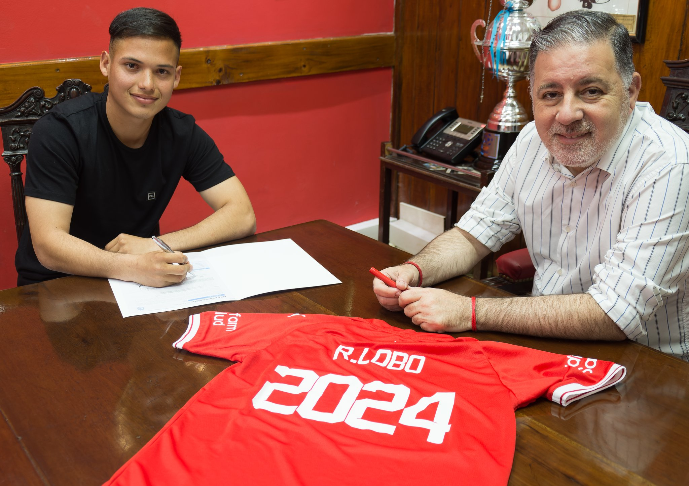
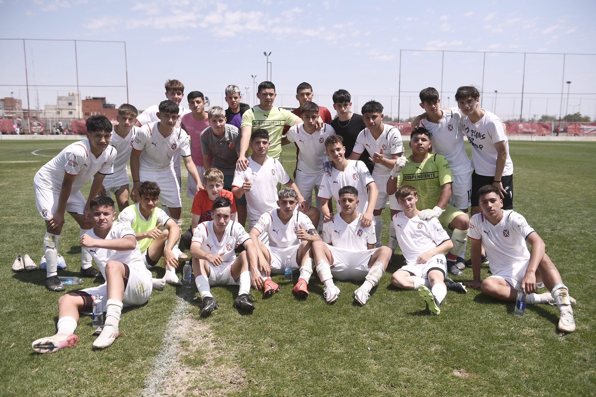
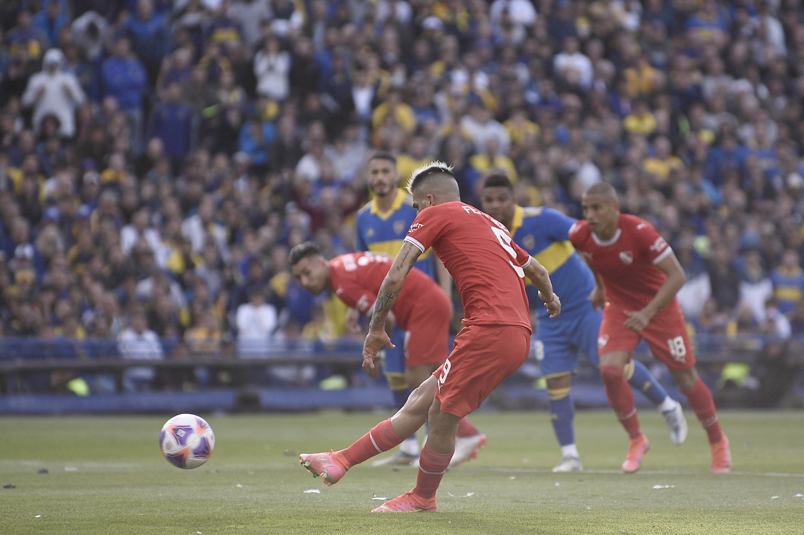
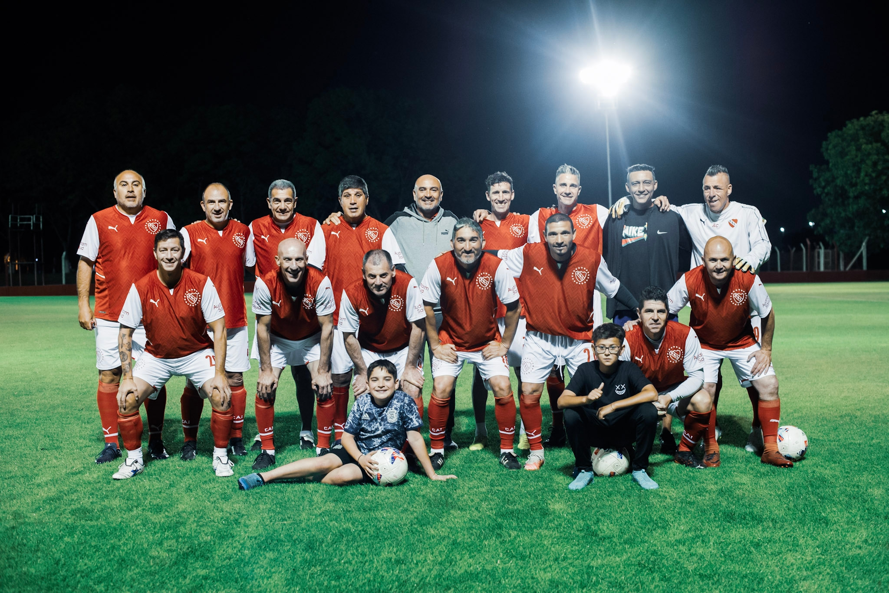

Dia de firmas
Ramiro Lobo firmó su primer contrato con el club y Pablo Cavallero se convirtió formalmente en el Director Deportivo del fútbol profesional. Por otra parte, Pablo Cavallero firmó su contrato como Director Deportivo del fútbol profesional del Club Atlético Independiente hasta diciembre de 2023.
Inferiores
Los chicos del Rojo jugaron ante Argentinos en la anteúltima fecha: cosecharon dos victorias, dos empates y dos derrotas. La Octava ganó y quedó puntera a una jornada del final. Por la anteúltima fecha del torneo, las Infantiles de Independiente se enfrentaron a Argentinos Juniors y tuvieron una jornada regular al obtener dos triunfos, dos empates y dos derrotas.
Cierre de campeonato
El Rey de Copas le jugó un partidazo al Xeneize en La Bombonera pero no pudo llevarse los tres puntos: fue 2 a 2 con goles de Leandro Fernández y Nicolás Vallejo. El Rey de Copas ya piensa en lo que se viene, la nueva temporada. A levantar los ánimos y pensar en devolver al club al lugar que merece.
Futbol senior
Independiente le ganó a Chacarita por 4 a 2 con un Claudio Graf en llamas, y se metió en una nueva instancia del torneo. El próximo jueves, Independiente enfrentará a Los Andes, en Villa Dominico, por los cuartos de final del certamen.